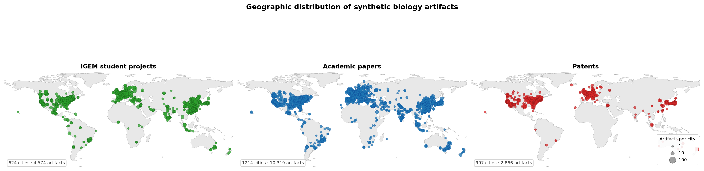
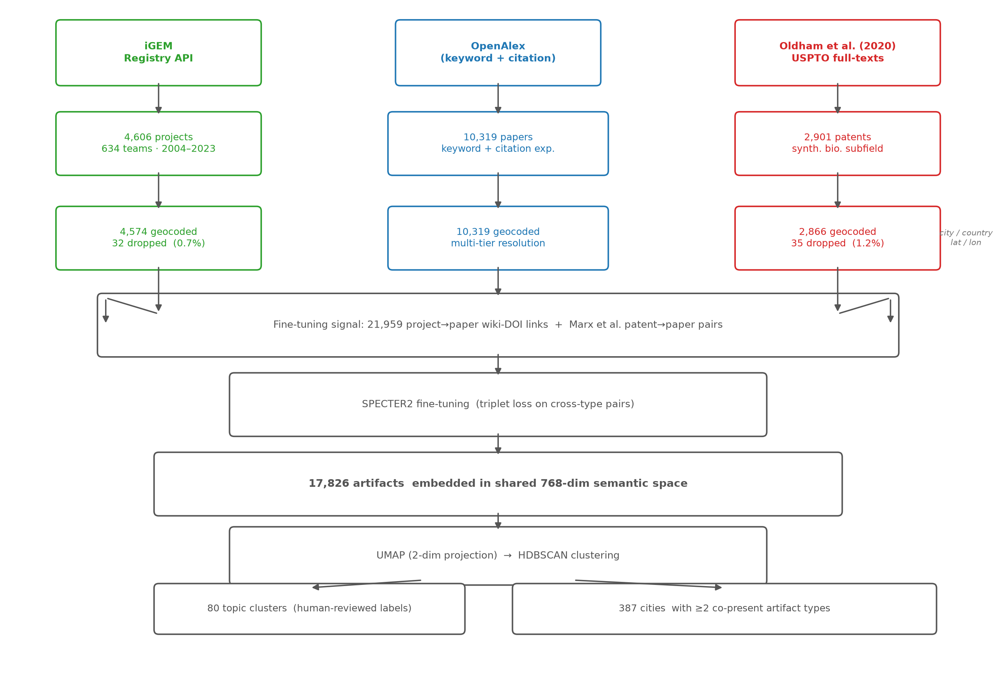
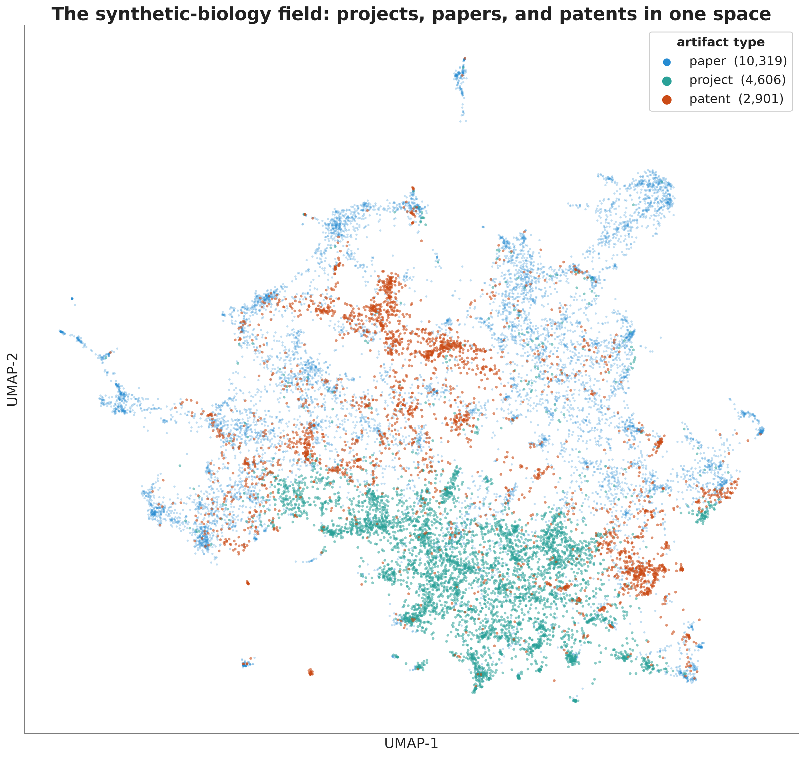
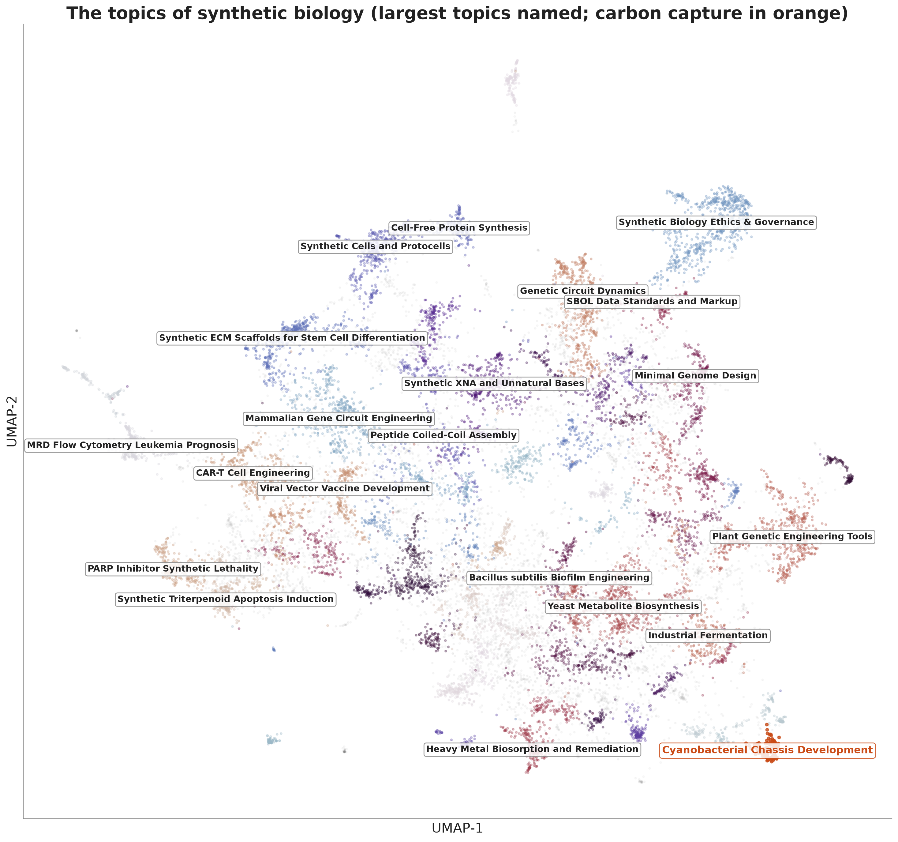

Methods & data
Answering the question meant building a corpus that did not exist: student projects, academic papers, and patents in synthetic biology, each geocoded to a city, tied to a year, and carrying text we could embed. The three come from different worlds and arrive in different shapes, so most of the work was in the collecting and the cleaning. This page walks through how each artifact type was gathered, linked, embedded, and clustered.

Patents
The patents came from Paul Oldham. Building a clean synthetic-biology patent set is genuinely hard: the field has no tidy patent classification, and keyword searches drag in the descriptive molecular biology that shares its vocabulary. Oldham has spent years assembling and curating public datasets that map the field’s patent landscape (Oldham and Hall 2018), so rather than rebuild a worse version we started from his curated set. Using a pre-cleaned public dataset also keeps the step reproducible.
From there we did our own processing, keyed to geography. Patents list inventors with addresses, so we resolved each patent to the cities of its inventors. Two choices matter. First, geocoding is fractional: a patent with inventors in three cities counts a third toward each, which follows standard practice in patent geography and avoids overcrediting a meaningless lead-inventor slot. Second, we restricted to USPTO filings. The practical reason is that US grant records give every inventor an address to geocode. The substantive reason is legal: under 35 U.S.C. §102(b)(1) an inventor’s own disclosure in the year before filing is not prior art against them, so a US academic can publish a result and still patent it. In Europe, publishing first destroys the patent. The USPTO therefore captures exactly the publish-then-patent behavior this project looks for. The patents should be read as a well-curated sample of synthetic biology’s commercial edge, not a complete census of it.
Papers
The papers came from OpenAlex, an open bibliographic database. OpenAlex fit for reasons beyond convenience: it is open, so the corpus can be rebuilt without a paywall, and it resolves author affiliations to institutions with coordinates, so a paper can be geocoded straight from the record. The final corpus runs to 10,319 works spanning 2000 to 2026.
Choosing how to query took experiment. Citation expansion, starting from a seed of known papers and following what they cite, grew the corpus fast but drifted: within a step or two the set filled with general molecular biology, the same boundary bleed that sank an earlier Lens.org patent attempt. A keyword search tuned to the field’s vocabulary held the boundary better, so we kept it as the primary method (the exact query is in the manuscript appendix). The choice trades some recall for precision, and it usually broke toward a cleaner, smaller corpus over a larger, noisier one.
Projects
The student projects came from iGEM directly. API queries pulled the roster for every year, giving 4,606 teams spanning 2009 to 2025. The roster is only the skeleton, though: the closest thing to an abstract is the project description a team writes on its public wiki. A lightweight scraper visited each team’s wiki and copied that description into the schema’s text field. Teams with missing or empty wikis were dropped, since a project with no text cannot be embedded.
Geocoding the teams was the hardest part of the collection. iGEM records an institution and country, but only recent years pin teams to a city, and the teams are a large international mix, many named as acronyms that map to no obvious place. An early attempt with Nominatim failed badly, once placing a Tokyo institution next to a similarly named restaurant in the United States. So we built a multi-tier approach, cheapest reliable method first: teams matching a known city were coded directly, the rest went to the OpenAlex institutions API, then to the Research Organization Registry (which caught many Chinese high-school teams OpenAlex missed), and only the residue went to a language model. Each tier caught what the previous could not. The two cheapest tiers resolved the vast majority.
One concern deserves naming: students choose universities partly by research strength, so some local alignment could reflect sorting rather than a property of cities. The data cannot rule this out. But pure sorting predicts a pattern the results do not show. It would produce alignment equally at all city sizes, not alignment that grows with a city’s corpus depth, and it predicts no temporal offset rather than the lead-lag peak the bipartite analysis found. Selection is likely a partial contributor, but it would push the measured alignment down, which makes the positive result more conservative, not less.
Parts
We also pulled the whole BioBrick registry, roughly 89,000 parts. Each record carries the DNA sequence, a short description, a functional class (promoter, coding sequence, reporter, terminator, ribosome binding site, composite, and others), the depositing team, and often a link to the paper the sequence came from. Where a project is a whole year’s work, a part is a single reusable genetic function, so the registry is a finer-grained geographic record of what students actually built. That record is what the Mantel test in the Results reads.
The most surprising links run from published papers back to the parts. There is no accepted way to cite an open parts registry in a journal, so these connections are recorded nowhere and had to be found. We searched the full text of open-access papers on PubMed Central for BBa_ identifiers and found 683 papers that name a registry part directly, a firm lower bound on a much larger true influence. The Uppsala case is one of these hits: the 2014 cyanobacteria paper turned up because it names the team’s own promoter. We added these part-citing papers to the corpus, a rare case where following citations sharpened the set instead of blurring it.
Linking the layers and fine-tuning
Put the link sources together and the corpus becomes a network. Projects connect to papers through wiki citations and shared parts; parts connect to papers through source citations and full-text mentions; papers connect to patents through the Marx patent-paper pairs (Marx and Fuegi 2020); parts connect to each other through composition. No single source is complete, but together they lace the three artifact types into one graph. That connective tissue is what makes the next step possible: a model can only learn how different artifact types relate if it is shown examples of them relating.
SPECTER2 was trained on paper-to-paper citations and had never seen a patent or a wiki. Fine-tuning nudges it toward our setting by training a small adapter on our own cross-type links, using a triplet loss. For an anchor document, a genuinely linked positive, and a hard negative (a document that is topically similar but not actually linked), the model is trained to keep the linked document closer than the unlinked one by a margin. Hard negatives are chosen deliberately, because easy ones (a genetics patent versus a paper on climate history) would train the model on a problem already solved. We assembled roughly 100,000 training pairs and held out about 10,000 for validation.
A caution belongs here. Fine-tuning on links we selected could, in principle, manufacture the very relatedness the project then claims to find. We address it by running the main results on both the fine-tuned adapter and the base SPECTER2. The central result survives on the base model, and fine-tuning attenuates it slightly rather than inflating it, which is the pattern you expect when adaptation improves signal-to-noise but does not create the signal. The adapter sharpens the picture; it does not paint one that was not there.

Embedding, projection, and clustering
With the corpus assembled and the model fine-tuned, we embedded everything. Each artifact becomes a vector of 768 numbers standing for its meaning, and from this point on a student project and a patent are two points in the same space, with a computable distance between them. The whole corpus becomes one cloud of points, and every question that follows is a question about the shape of that cloud.
A 768-dimensional cloud is not something we can look at or cluster reliably. As dimensions grow, all pairwise distances converge toward the same value, so “near” and “far” stop carrying information. This is the curse of dimensionality (Bellman 1957). We reduce the dimensions first with UMAP, which learns a low-dimensional map that keeps each point’s near neighbors close while spreading out points that were far apart (McInnes et al. 2018). We reduce to about sixty dimensions for clustering (well-behaved geometry, but still enough to separate similar subfields) and all the way to two dimensions for the map below.

To turn the visible structure into something countable, we clustered by topic with HDBSCAN, which groups points that crowd together densely and, importantly, leaves genuinely scattered points unassigned rather than forcing every document into a group (Campello et al. 2013). Run on the reduced embeddings, it found 80 clusters: dense knots of projects, papers, and patents that share a subject. A cluster here is an empirical topic, discovered from the text rather than imposed from a list.
Each cluster arrives as a numbered bag of documents with no name. For each, we passed the titles and abstracts of its most representative documents to a language model and asked what they had in common; a human then checked and, where needed, corrected the label. Of the 80 labels, roughly a quarter needed correcting, usually where the model latched onto vocabulary that fit the cluster’s core but not its edges. This mirrors the whole method in miniature: the machine reads at a scale no person could, and the human supplies the judgment to catch where it overfit. Neither alone would do it well.

With the corpus built, embedded, clustered, and tagged, the data is finally ready to be questioned. The Results do the questioning.